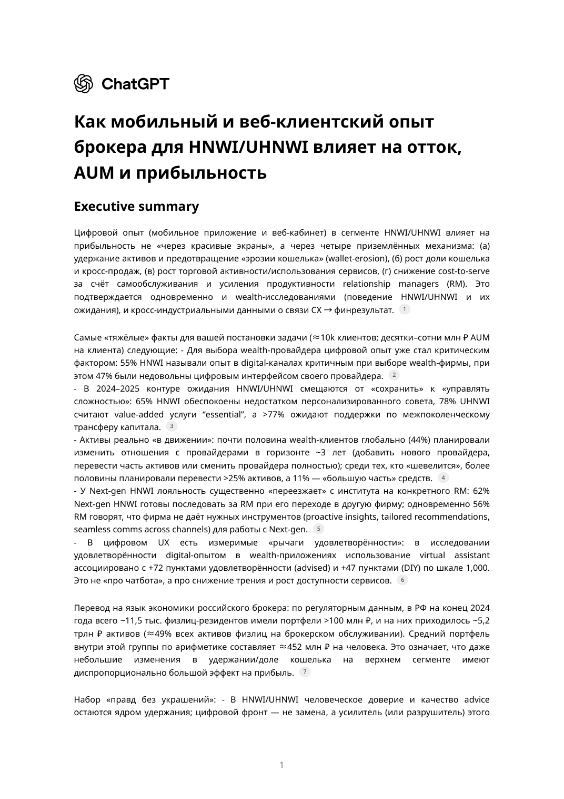

HNWI считают digital-опыт критичным при выборе wealth-провайдера.
Research x Product x Wealth Management
Цифровое трение: как mobile и web брокера влияют на AUM, churn и прибыль
Эта страница собрана на основе приложенного исследования о том, как клиентский digital-опыт брокера в сегменте HNWI/UHNWI влияет на удержание активов, долю кошелька, торговую активность и cost-to-serve. Видео и PDF доступны на этой же GitHub Pages-публикации.
wealth-клиентов готовы менять или расширять отношения с провайдерами.
Next-gen HNWI готовы последовать за RM при его переходе в другую фирму.
в РФ сосредоточено у ~11.5 тыс. клиентов с портфелем свыше 100 млн ₽.

Attached research
Полный PDF исследования
16 страниц: executive summary, доказательная база, карта метрик, приоритизация фич по ROI и список первоисточников.
Core thesis
Digital влияет на P&L через четыре конкретных механизма
01. Удержание активов
Снижение цифрового трения уменьшает wallet erosion и AUM attrition.
02. Рост share-of-wallet
Holistic view и персональные инсайты помогают собрать большую долю капитала.
03. Активность и доход
Low-friction execution и self-service повышают частоту действий и сделок.
04. Снижение cost-to-serve
Автоматизация и RM-tooling разгружают ops, support и ручные исключения.
«Цифровой фронт — не замена, а усилитель (или разрушитель) этого доверия».
Evidence snapshot
Ключевые факты и where the money moves
Digital уже влияет на выбор провайдера
Choice driverDigital critical in provider choice
55%Dissatisfied with current interface
47%Digital перестал быть nice-to-have: это уже элемент доверия, выбора и удержания.
Активы находятся в движении
AUM flow
14%
добавят нового провайдера
21%
переведут часть капитала
9%
полностью сменят провайдера
44% wealth-клиентов планируют изменить отношения с провайдерами за ~3 года.
Более половины из них готовы перевести свыше 25% активов, а 11% — большую часть капитала.
add provider
move money
switch
Удержание RM = удержание AUM
Advisor gravity
62%
Next-gen HNWI готовы последовать за RM при его переходе.
56%
RM считают, что фирма не даёт им нужных digital-инструментов.
Это не HR-история отдельно от продукта: RM tooling напрямую влияет на churn верхнего сегмента.
Верхний сегмент непропорционально влияет на прибыль
Russia concentration
49%
активов физлиц у брокеров
11.5 тыс. клиентов с портфелем свыше 100 млн ₽.
5.2 трлн ₽ активов под контролем этой группы на конец 2024 года.
Даже небольшое снижение AUM attrition в этом слое клиентов даёт диспропорциональный эффект на P&L.
Запрос смещается от “сохранить” к “управлять сложностью”
Value-added and DX
78%
UHNWI считают value-added услуги essential.
65%
HNWI беспокоит нехватка персонализированного advice.
>77%
ожидают помощи по межпоколенческой передаче капитала.
+72
пункта satisfaction у advised-клиентов при наличии virtual assistant.
+47
пунктов satisfaction у DIY-сегмента при использовании assistant.
Causal model and ROI
Что даёт ROI и как это измерять
От DX-рычагов к P&L
Performance, self-service, personalization, security confidence, RM integration и omnichannel consistency влияют на completion rate, engagement, churn propensity, support contacts и далее на revenue, AUM inflows и cost-to-serve.
Приоритеты mobile / web по ROI
1. Performance & trust baseline. 2. RM-centric omnichannel. 3. Holistic client view. 4. Personalized insights. 5. Self-service journeys и bounded assistant. 6. Low-friction order capture.
Cohort retention + AUM survival
Считать отдельно account churn и AUM attrition, чтобы видеть частичный отъезд активов раньше полного ухода.
Wave rollout вместо грубого A/B
Для HNWI безопаснее запускать фичи волнами и смотреть difference-in-differences по RM-пулам, регионам и каналам.
RM tooling как KPI
Удержание RM, время на non-client tasks и качество RM tools должны входить в KPI-систему продукта.
Не путать продукт с рынком
При анализе AUM и активности отделять эффект рынка, волатильности, советов и налоговых факторов от эффекта интерфейса.
Direct quotes
Три тезиса, которые задают рамку решения
«Цифровой фронт — не замена, а усилитель этого доверия».
«Mobile vs web — ложная дихотомия».
«Удержание AUM high-tier — прямой драйвер прибыли».
Attached materials
Материалы на этой GitHub Pages-публикации
Видео: Цифровое_трение.mp4
Уже опубликованный ролик, переиспользованный на этой странице без внешнего хостинга.
Полный PDF исследования
16 страниц с summary, таблицами эффектов, картой KPI и библиографией первичных источников.
Обложка / preview
На странице используется рендер первой страницы PDF как обложка и poster для доступа к материалу.
Sources
Ссылки на исследование и ключевые первоисточники
Все цифры на странице сведены из приложенного PDF. Полная библиография находится в самом исследовании на стр. 14-16; ниже вынесены ключевые внешние источники из этого списка.